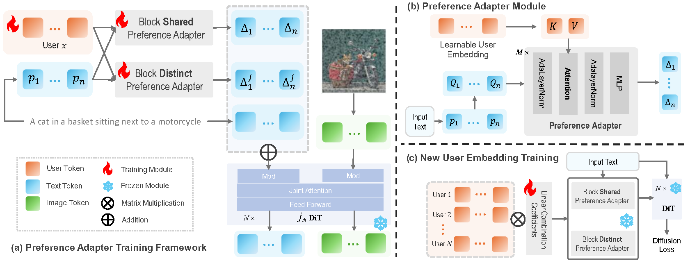

Premier: Personalized Preference Modulation with Learnable User Embedding in Text-to-Image Generation
1. 論文の内容
1.1 問題設定
ユーザーが過去に「好んだ」画像から、そのユーザーの美的嗜好 (画風・色調・構図など) を学習し、任意のテキストプロンプトの生成結果に反映する preference personalization。DreamBooth 等の「特定の被写体を再現する」subject personalization とは区別される。
従来手法 (ViPer, DrUM など) は嗜好を MLLM で文章や特徴に変換してから生成モデルへ渡すが、表現空間の不一致による情報損失と 指示追従の弱さが問題になる。Premier は 生成モデルの表現空間の中で直接学習される user embedding でこれを置き換える。
1.2 手法

| 構成要素 | 内容 |
|---|---|
| ベースモデル | FLUX.1-dev (MM-DiT, flow matching)。DiT 本体は凍結。 |
| Learnable user embedding eu | ユーザーごとに 30 × 1024 の学習可能テンソル (1 ユーザー約 61 KB)。 |
| Preference Adapter × 2 | T5 のテキストトークン埋め込み ep_i を Query、eu を Key/Value とする cross-attention を 3 層重ねた小さな Transformer。 テキストトークン i ごとに modulation 方向 Δ を出力する。block-shared (全 DiT block で共通の Δ) と block-distinct (最終層の出力次元を block 数倍に広げ、block ごとに異なる Δ) の 2 種。 |
| Prompt Preference Modulation (PPM) | MM-DiT では timestep と CLIP テキスト埋め込みから作った modulation ベクトル y が AdaLN を通じて全トークンを変調する。Premier はテキストトークン i・block j ごとに
yij = y + Δshared(eu, ep_i) + Δjdistinct(eu, ep_i)
と置き換える (TokenVerse / Mod-Adapter 系の「token modulation space」の考え方)。画像トークン側の y は変更しない。 |
| Dispersion loss | Flow matching 損失だけだとアダプタがテキストに過適合し、ユーザー間の差が出ない。そこで空プロンプトで計算した Δ をバッチ内の他ユーザーと引き離す InfoNCE 型損失 (Diffuse and Disperse, Wang & He 2025 に倣う) を導入:
Ldisp = log Σu'≠u exp(−D(Δ(eu, e∅), Δ(eu', e∅))), D = L2 距離
L = Lflow + λshared Ldispshared + λdistinct Ldispdistinct, λ = 0.1 |
| Stage 1 学習 | 学習ユーザー 1000 人 (各 40〜80 枚) で、アダプタ 2 つ + 1000 人分の embedding を同時に学習。Prodigy (lr 1.0)、batch 16、8×A800。 |
| Stage 2: 新規ユーザー | アダプタと学習ユーザー embedding を凍結し、新規ユーザーを 学習ユーザー embedding の線形結合 enew = Σk αk ek で表し、係数 α (1000 個) だけを Flow matching 損失で学習する。 履歴が 8 枚未満では embedding を直接学習するより安定して良い (8 枚以上なら直接学習が同等以上)。1 ユーザー約 30 分 (A800)。 |
推薦システムの言葉では、学習済みユーザーは user embedding、新規ユーザーは既存ユーザー埋め込みの重み付き和で cold-start に対応する構成に相当する。
1.3 公開重みの実際の構成 (adapter_config.yaml より)
- アダプタ幅 3072、3 層、heads 8。block-distinct 側は double block 19 個のみ を変調 (single block は変調しない)。
uncond: true: block-distinct アダプタへの入力テキストは 空プロンプト (ユーザー埋め込みのみに依存)、block-shared 側は実プロンプトを使う。- T5 の系列長 512、学習解像度 512px、学習ユーザー 1000 人、アダプタ 907M パラメータ (1.8 GB)。
1.4 論文の実験結果 (PrefBench, テストユーザー 50 人、履歴 8 枚)
| Data | FLUX.1-dev | InstantStyle | Bagel | Qwen-Image-Edit | DrUM | ViPer | Premier | |
|---|---|---|---|---|---|---|---|---|
| ViPer Score ↑ | 0.889 | 0.395 | 0.628 | 0.508 | 0.469 | 0.479 | 0.516 | 0.689 |
| ViPer 勝率 vs FLUX ↑ | - | - | 0.777 | 0.703 | 0.613 | 0.573 | 0.676 | 0.876 |
| CLIP T2I ↑ | 0.303 | 0.309 | 0.299 | 0.311 | 0.310 | 0.307 | 0.298 | 0.318 |
| LPIPS (対 好み画像) ↓ | - | - | 0.664 | 0.644 | 0.641 | 0.654 | 0.656 | 0.599 |
- Ablation: dispersion loss を外すと ViPer Score 0.689 → 0.450 と最も落ちる。shared / distinct どちらか一方を外しても 0.48〜0.49。PPM (プロンプトを空にする) を外すと 0.649。
- LoRA (rank 1, 5000 step) と比べ嗜好の再現は同等 (0.710 vs 0.689) だがテキスト追従は Premier が上 (CLIP 0.301 vs 0.318)。保存容量は 61 KB vs 10.7 MB、学習時間 30 分 vs 1.2 時間、推論オーバーヘッド約 1 秒。
- 学習ユーザーを 1000 人 → 100 人にすると ViPer Score 0.70 → 0.50 と大きく劣化 (ユーザー数が多いほど新規ユーザーの表現力が上がる)。
- 40 人の専門家による A/B 評価でも全ベースラインに対して Premier が選好された。
2. 今回対応した内容
2.1 方針
公式実装と公開重み (アダプタ + 学習ユーザー 1000 人 + テストユーザー 50 人分) が存在したため、公式コードを一切改変せず (バグ修正 1 行を除く)、 著者環境のハードコードされたパスを外して CLI から呼ぶ薄いラッパを用意し、RTX 4090 (24 GB) で 生成 と 新規ユーザー学習 (Stage 2) が動くことを確認した。
公式実装が見つかる前に論文 (TeX ソース) から書いた独自再現 (premier-repro/premier/) はコア部分の動作確認まで行い、参考として残している。
2.2 環境構築
| 項目 | 内容 |
|---|---|
| 公式リポジトリ | official/Premier/ にクローン。OminiControl + XVerse ベース。 |
| 公開重み | official/weights/pino10010_Premier/: mod_adapter.safetensors (1.8 GB)、user_embedding.safetensors (1000 × 30720)、users/ (テスト 50 人、直接学習)、users_linear/ (同、線形結合係数)、adapter_config.yaml |
| Python 環境 | official/.venv (Python 3.12)。公式 requirements.txt の pin 通り (torch 2.6.0 / diffusers 0.33.0 / transformers 4.52.4 / lightning 2.5.2 / peft 0.14.0)。社内 index 行を除去し、不足していた einops, sentencepiece, protobuf と、int8 用の optimum-quanto を追加 (requirements-local.txt)。 |
| FLUX の重み | ローカルには FLUX.1-dev の transformer のみキャッシュされていたため、VAE / CLIP-L / T5-XXL は同一重みの FLUX.1-schnell キャッシュから読み、scheduler は dev の設定値をコードで指定 (追加ダウンロード無し)。 |
2.3 24 GB GPU で動かすための対策
公式コードは FluxPipeline.from_pretrained(...).to("cuda") を bf16 で行う前提 (transformer 24 GB + T5 9.5 GB、著者環境は A800 80 GB)。
| 問題 | 対策 (premier_local.py) |
|---|---|
| transformer 24 GB が載らない | 推論: diffusers の layerwise casting で float8 保存・bf16 計算 (--memory fp8, 12 GB)。学習: optimum-quanto の int8 重み (--memory int8、逆伝播可、nvcc 不要)。 |
diffusers の fp8 化は名前に norm を含む層を除外するため、FLUX の AdaLN 射影 (norm1.linear 等、3.2B params) が bf16 に残り +3 GB | FLUX には除外パターン pos_embed のみを指定して AdaLN 射影も fp8 化。 |
T5 は T5LayerNorm と wo が活性を重みの dtype にキャストするため fp8 化すると失敗 | T5 は norm / embedding / wo を bf16 のまま残す (5.8 GB)。 |
| 他プロセスが GPU を使っていて空きが 20 GB 未満 | --t5 offload (自動判定) で T5 を CPU RAM に置き accelerate で層ごとにストリーミング。encode_prompt をメモ化して空プロンプトの再エンコードを省く。 |
| 学習は Lightning + bf16 全載せ、gradient checkpointing 無効 | train_new_user.py: 公式 training_step をそのまま素の PyTorch ループに移植し、int8 transformer + gradient checkpointing で実行。T5 はプロンプトを先にエンコードして解放。 |
公式 transformer_forward_verse の checkpointing 分岐が single block に存在しない引数 use_img_mod を渡して落ちる | patches/0001-fix-single-block-checkpoint-kwarg.patch (1 行削除) を適用。 |
| 公式スクリプトは著者のパス・ユーザー ID がハードコード | run_premier.py / train_new_user.py が同じ関数 (generate_xverse, load_modulation_adapter, transformer_forward_verse, EmbeddingLinearCombination) を CLI 引数で呼ぶ。 |
2.4 動作確認結果 (RTX 4090 24 GB)
| 項目 | 結果 |
|---|---|
| 生成 (fp8, 512px, 20 step) | OK 5.4 秒/枚、GPU ピーク 19.4 GB |
| 新規ユーザー学習 (int8 + checkpointing, 線形結合, 512px, batch 1) | OK 0.8 秒/step、ピーク 14.2 GB。300 step で 4 分 (公式設定の 5000 step なら約 70 分) |
| 学習した embedding での生成 | OK 未学習プロンプトでもスタイルが移る (下図) |


3. 起動方法
3.1 セットアップ (構築済み。再現する場合)
cd ~/stable-diffusion/personalized-t2i/premier-repro/official
uv venv .venv --python /usr/bin/python3.12
uv pip install --python .venv/bin/python -r requirements-local.txt
python -c "from huggingface_hub import snapshot_download; snapshot_download('pino10010/Premier', local_dir='weights/pino10010_Premier')"
(cd Premier && git apply ../patches/0001-fix-single-block-checkpoint-kwarg.patch) # クローン直後のみ
3.2 画像生成
cd ~/stable-diffusion/personalized-t2i/premier-repro/official
source .venv/bin/activate
python run_premier.py \
--users none train:0 train:1 test:3685 linear:3685 \
--prompts "a cat sitting on a windowsill" "a city street at night" \
--out outputs/demo --steps 28 --guidance 3.5 --size 512
# → outputs/demo/grid.jpg (行 = ユーザー, 列 = プロンプト, 列ごとに同じ seed) と個別 PNG, grid.json
--users | 内容 |
|---|---|
none | 素の FLUX.1-dev (比較用) |
train:<0-999> | 学習ユーザー 1000 人の embedding |
test:<id> | 公開テストユーザー (直接学習)。id は weights/pino10010_Premier/users/ のファイル名 (3685〜4279) |
linear:<id> | 同テストユーザーの線形結合版 |
file:<path> | train_new_user.py の出力 (user_combination_*.safetensors または user_embedding_*.safetensors) |
主なオプション: --steps (既定 28) · --guidance (3.5) · --size (512) · --seed · --memory fp8|int8|bf16|offload · --t5 auto|gpu|offload。
3.3 新規ユーザーの学習 (数枚の好きな画像から)
# items.json: [{"image": "img1.png", "caption": "a cat sitting on a windowsill"}, ...]
# (公式の CSV 形式 positive_image,caption も --csv で可。画像パスは JSON/CSV からの相対、または --data-path)
python train_new_user.py --name alice --json items.json --mode linear --steps 1000 --out outputs/users
# → outputs/users/alice/user_combination_alice.safetensors (公式形式), user_embedding_alice.safetensors, meta.json, log.jsonl
python run_premier.py --users none file:outputs/users/alice/user_combination_alice.safetensors \
--prompts "a castle on a hill" "a portrait of an old fisherman" --out outputs/alice
--mode linear(論文の既定): 学習ユーザー 1000 人の embedding の線形結合係数のみ学習。AdamW lr 0.01 (公式設定)。--mode direct: 30 × 1024 の embedding を一から学習。Prodigy lr 1.0 (公式設定)。画像が 8 枚以上あるとき向け。- 公式は 5000 step。4090 で 0.8 秒/step なので、まず 300〜1000 step で傾向を見て伸ばすのが現実的。
- 公式の学習ステップと同じ: t ~ sigmoid(N(1,1))、guidance embedding = 1、損失 = MSE(v, x1 − x0)、勾配クリップ 0.5。
3.4 公式スクリプトをそのまま使う場合
Premier/monitor_pid_*.sh → accelerate launch -m scripts.train_flux.train_* は、著者環境のパス (../pickapic_dxm_coco/..., /home/disk3/...) と
bf16 全載せ (40〜70 GB) を前提にしており、24 GB では動かない。データ形式 (pkl / CSV) と config の意味は Premier/README.md と Premier/train/config/*.yaml を参照。
4. ディレクトリ構成
~/stable-diffusion/personalized-t2i/premier-repro/
├── README.md 全体の説明
├── docs/premier_summary.html このファイル
├── official/ ★ 公式実装で動かす (README_ja.md 参照)
│ ├── Premier/ 公式リポジトリ (パッチ 1 行のみ)
│ ├── weights/pino10010_Premier/ 公開重み
│ ├── .venv/ 公式 pin 通りの環境
│ ├── requirements-local.txt
│ ├── premier_local.py ローカル重み読み込み / fp8・int8 / 公開 user embedding の読み込み
│ ├── run_premier.py 生成 CLI
│ ├── train_new_user.py 新規ユーザー学習 CLI
│ ├── patches/ 公式コードへの修正
│ ├── test_data/watercolor/ 学習テスト用の水彩画 8 枚 + items.json
│ ├── results/ 動作確認の結果画像
│ └── outputs/ 実行ログ・生成物
├── premier/, scripts/, configs/ 独自再現実装 (参考。論文 TeX からの実装、コア部分のみ GPU で確認)
└── data/prefbench/ PrefBench (wenyii/PrefBench) の manifest。画像本体は未取得
5. 未対応・注意点
- 未実施 Stage 1 (アダプタ + 1000 ユーザー embedding の学習)。公式スクリプトは 4×A800 + 著者データ形式前提で、公開重みがあるため通常は不要。24 GB で回すには
train_new_user.pyと同じ int8 + checkpointing 化と PrefBench の整備が必要。 - 未実施 ViPer / CLIP / LPIPS による定量評価 (公式コードに評価スクリプトは含まれない。独自実装
premier/eval/metrics.pyはあるが未実行)。 - テストユーザー 50 人 (id 3685〜4279) は著者の内部データの id で、元となる好み画像は公開されていない。
- T5 の系列長は公式の 512 のまま (
--max-seq-len)。公開重みは 512px で学習されているため、まず 512px で使うのが無難。 - GPU に別プロセス (例: ローカル LLM サーバ) が載っていると fp8 モードでも空きが足りない。
--t5 offloadで回避できるが、学習は T5 解放後で 14 GB 程度あれば足りる。 - 展示用途では、学習ユーザー 1000 人の embedding をそのまま「嗜好プリセット」として使える。新規ユーザーの線形結合係数 (1000 個) は「どの既存ユーザーに近いか」の可視化にも使える (
meta.jsonのtop_train_users)。